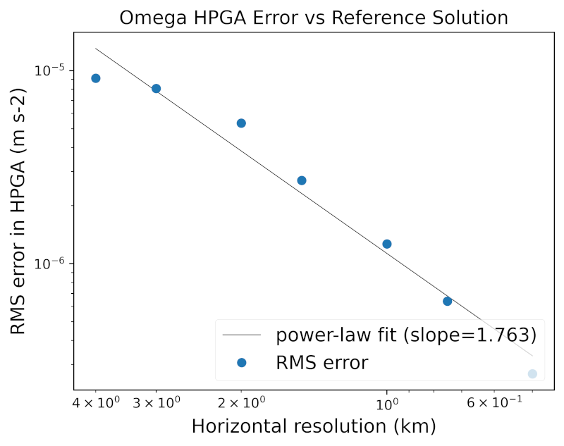

horizontal pressure gradient
description
The horiz_press_grad tasks in polaris.tasks.ocean.horiz_press_grad
exercise Omega’s hydrostatic pressure-gradient acceleration (HPGA)
for a two-column configuration with prescribed horizontal gradients.
The analysis uses two different baselines, each with a different purpose:
an analytic reference solution evaluated inside the
analysisstep that is used as the main accuracy target, anda Python-computed two-column HPGA diagnostic from the
initstep that is used as a consistency check against Omega.
Each task includes:
an
initstep at each horizontal/vertical resolution pair,a single-time-step
forwardrun at each horizontal resolution, andan
analysisstep that evaluates the analytic reference and compares Omega output with both the reference and the Python-initialized HPGA.
The tasks currently provided are:
ocean/column/horiz_press_grad/salinity_gradient
ocean/column/horiz_press_grad/temperature_gradient
ocean/column/horiz_press_grad/ztilde_gradient
{kind=link}

The point of these tasks is not only to verify that Omega can reproduce the same discrete answer as the Python initialization, but also to measure how the two-column discretization converges toward a more accurate non-local approximation of the continuous hydrostatic pressure-gradient force.
supported models
These tasks currently support Omega only.
mesh
The mesh is planar with two adjacent ocean cells. For each resolution in
horiz_resolutions, the spacing between the two columns is set by that value
(in km).
The HPGA diagnostic is evaluated on the single internal horizontal edge that
connects the two columns, at each layer midpoint. In this page, x denotes
the along-layer horizontal direction used by Omega’s horizontal gradient
operator. In the idealized two-column planar geometry, this direction follows
the line joining the two cell centers. It is therefore related to the shared
edge normal, but it is not intended to define a separate exact geometric
edge-normal coordinate.
vertical grid
The vertical coordinate is p-star (see p-star), Omega’s ALE
pseudo-compressible variant of the z-tilde coordinate, with a uniform
pseudo-height spacing for each test in vert_resolutions.
The meaning of the along-layer x direction depends on the task variant. In
the salinity_gradient and temperature_gradient tests, the z-tilde
interfaces are level, so pressure surfaces are also horizontally level except
where they intersect the bathymetry. In the ztilde_gradient test, the
prescribed z-tilde gradient tilts the layers, so the pressure surfaces are
sloped and the along-layer direction follows those sloping layers.
reference solution
The reference HPGA is evaluated analytically at the edge (\(x = 0\)) using the chain-rule / Leibniz expansion of the horizontal pressure-gradient force in pseudo-height coordinates. Because the continuous pressure-gradient force is coordinate-invariant, the along-pseudo-height formula equals \(-g\,\partial z / \partial x\big|_{\tilde z}\) exactly, including near the seafloor.
The reference is anchored at the surface rather than the seafloor, because
the surface is the boundary the model honours: Init/Omega build the p-star
column from the prescribed sea-surface height and surface pressure, so the HPGA
vanishes at the surface (for zero surface slope) and grows downward.
The reference acceleration at pseudo-height \(\tilde z\) is
where:
\(\eta' = \partial_x \eta\) is the sea-surface-height gradient,
\(\tilde z_s\) is the surface pseudo-height (\(\tilde z_s = -p_s / (\rho_0 g)\), zero only when the surface pressure is zero) and \(\tilde z_s' = \partial_x \tilde z_s\) is its gradient,
\(\alpha\) is specific volume from the TEOS-10 equation of state,
\(\alpha_{S_A} = \partial \alpha / \partial S_A\) and \(\alpha_{\Theta} = \partial \alpha / \partial \Theta\) are TEOS-10 first derivatives of specific volume.
The surface boundary term is kept fully general, so a nonzero sea-surface
height or surface pressure (nonzero geom_ssh_grad and/or surface
z_tilde_grad node) is supported without further changes. The three task
variants currently provided all use zero surface slope.
The gradients \(\partial_x S_A\) and \(\partial_x \Theta\) at fixed \(\tilde z\) are
obtained by centred finite-differencing PCHIP interpolants evaluated at
\(x = \pm\varepsilon\), where \(\varepsilon =\) reference_horiz_eps_km (1 m by
default). This handles moving-node inputs correctly, so it is valid for the
ztilde_gradient task as well as the level-layer tasks.
The integral in the formula is evaluated by composite quadrature. The number
of sub-panels per interval is set by reference_quadrature_subdivisions (4 by
default).
For comparison with a layer-averaged Omega tendency, the analysis step
averages \(a(\tilde z)\) over the model’s actual pseudo-height layer bounds using
4-point Gauss–Legendre quadrature with reference_quadrature_subdivisions
sub-panels per layer. The deepest valid layer (which abuts the bathymetry) is
excluded from the RMS error calculation, because partial bottom cells make that
layer’s geometric extent differ from the smooth reference geometry.
python HPGA in the init step
The init step computes a second HPGA estimate directly from the initialized
two-column state. This calculation is intentionally much closer to the
discrete Omega formulation than the high-fidelity reference is.
First, the step constructs the two-cell mesh and the test vertical grid for the
requested (horiz_res, vert_res) pair. Because the geometric water-column
thickness depends on the equation of state through the mapping from z-tilde to
geometric height, the step iteratively rescales the pseudo-bottom depth so that
the resulting geometric water-column thickness matches the prescribed
sea-surface and bottom geometry. This fixed-point iteration is provided by
polaris.ocean.vertical.pstar_init.PStarInitStep (see
Vertical coordinate), from which Init inherits.
Once the initialized state is available, the Python diagnostic computes the same thermodynamic quantities used by Omega: pressure, specific volume, geometric height, and Montgomery potential. It then forms a two-column finite difference,
with edge pressure
and writes the corresponding diagnostic
to init.nc.
This Python HPGA is not the main reference solution. Instead, it checks whether Omega’s one-step tendency matches the expected two-column discrete calculation from the initialized state.
config options
Shared options are in section [horiz_press_grad]:
# resolutions in km (distance between the two columns)
horiz_resolutions = [4.0, 3.0, 2.0, 1.5, 1.0, 0.75, 0.5]
# vertical resolution in m for each two-column setup
vert_resolutions = [4.0, 3.0, 2.0, 1.5, 1.0, 0.75, 0.5]
# geometric sea-surface and sea-floor midpoint values and x-gradients
geom_ssh_mid = 0.0
geom_ssh_grad = 0.0
geom_z_bot_mid = -500.0
geom_z_bot_grad = 0.0
# pseudo-height bottom midpoint and x-gradient
z_tilde_bot_mid = -576.0
z_tilde_bot_grad = 0.0
# midpoint and gradient node values for piecewise profiles
z_tilde_mid = [0.0, -48.0, -144.0, -288.0, -576.0]
z_tilde_grad = [0.0, 0.0, 0.0, 0.0, 0.0]
temperature_mid = [22.0, 20.0, 14.0, 8.0, 5.0]
temperature_grad = [0.0, 0.0, 0.0, 0.0, 0.0]
salinity_mid = [35.6, 35.4, 35.0, 34.8, 34.75]
salinity_grad = [0.0, 0.0, 0.0, 0.0, 0.0]
# reference settings
reference_quadrature_method = gauss4
reference_quadrature_subdivisions = 4
reference_horiz_eps_km = 1.0e-3
# regression thresholds and convergence checks
omega_vs_polaris_rms_threshold = 1.0e-10
omega_vs_reference_high_res_rms_threshold = 1.0e-6
omega_vs_reference_convergence_rate_min = 1.5
omega_vs_reference_convergence_rate_max = 2.1
omega_vs_reference_convergence_fit_max_resolution = 4.0
The omega_vs_polaris_rms_threshold bounds the RMS difference between the Omega
forward HPGA and the Python-initialized HPGA (the consistency check). The
omega_vs_reference_* options bound the Omega-vs-reference accuracy: the RMS
error at the highest resolution, the allowed power-law convergence slope, and
the finest horizontal resolution included in the convergence fit (all
resolutions are still shown in the plots).
The three task variants specialize one horizontal gradient field:
salinity_gradient: nonzerosalinity_gradtemperature_gradient: nonzerotemperature_gradztilde_gradient: nonzeroz_tilde_bot_grad
time step and run duration
The forward step performs one model time step and outputs pressure-gradient
diagnostics used in the analysis.
analysis
The analysis step computes and plots:
Omega RMS error versus reference (
omega_vs_reference.png), including a power-law fit and convergence slope, andOmega RMS difference versus Python initialization (
omega_vs_python.png).
The corresponding tabulated data are written to
omega_vs_reference.nc and omega_vs_python.nc.
For the Omega-versus-reference comparison, the analytic reference
\(a(\tilde z)\) is layer-averaged over the model’s actual pseudo-height layer
bounds (from init.nc) using 4-point Gauss–Legendre quadrature. The deepest
valid layer is excluded from the RMS error calculation because that layer abuts
the bathymetry, where partial bottom cells make the model layer’s geometric
extent differ from the smooth reference geometry.
For the Omega-versus-Python comparison, the analysis uses the HPGA written by
the init step in init.nc, so this second metric should be read as an
implementation-consistency check rather than as an accuracy measure against the
high-fidelity reference.
Implementation details for the ReferenceColumn evaluator and the init and
analysis steps are described in horiz_press_grad.